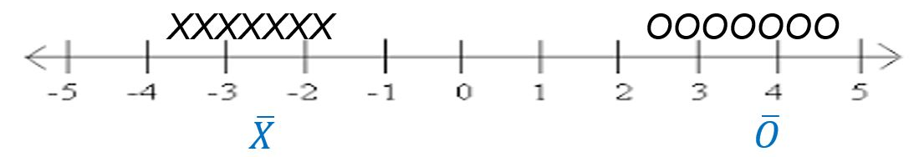
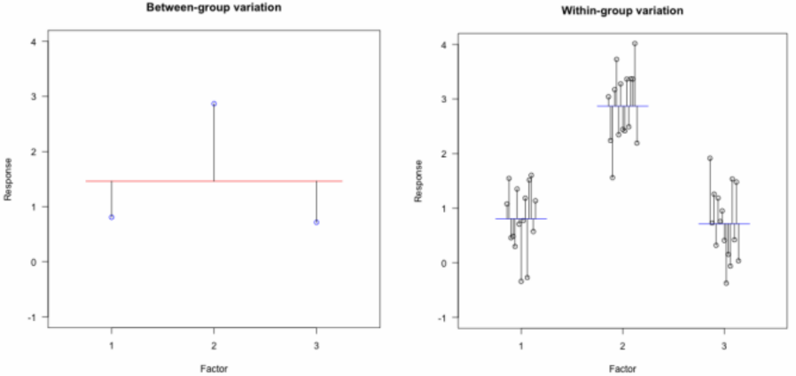

ANOVA and the F-Test
With the effects model defined we will want to test whether the treatment factor(s) has a statistically significant effect on the response variable. In other words we are interested in testing the hypotheses:
\[ H_0: \alpha_1 = \alpha_2 = ... = 0 \] \[ H_a: \alpha_i \ne 0 \text{ for at least one i} \qquad(1)\]
Where \(\alpha_i\) represents the effect of a factor level.
Testing whether the effects are all equal to each other is incomplete, you must include the zero. Since all the factor level effects must sum to zero for a given factor, the only way all effects can be equal is if they are all zero.
Analysis of variance (ANOVA) is a statistical technique that allows us to simultaneously test all factor level effects at the same time.
ANOVA vs. Other Analysis Tools
Multiple t-tests
At this point it is reasonable to ask if we couldn’t arrive at the same conclusion by simply conducting multiple t-tests. For example, you could do a t-test for each factor level to determine if the effect is significantly different from zero. Or you might consider testing each combination of factor level effects to see if they are equal.
The multiple t-test approach has a couple of a drawbacks. The first drawback becomes apparent if you have many factor levels. If you only have 3 or 4 factor levels conducting many tests may be only a minor annoyance. However, if there are many factor levels it becomes a real burden to run, present and interpret so many tests.
The other main drawback of using multiple t-tests is more substantive and has to do with the probability of a Type I error. Suppose the treatment factor in our study has 3 levels. The null hypothesis associated with an ANOVA that tests all factor level effects simultaneously is:
\[ H_0: \alpha_1 = \alpha_2 = \alpha_3 = 0 \]
Testing at a 0.05 significance level means there is a 0.05 probability we will incorrectly reject this null hypothesis (i.e. commit a Type I error). Conversely, there is 0.95 probability we will NOT commit a Type I error.
If we attempt to approach the problem by conducting multiple t-tests, we would test the following set of null hypotheses:
\(H_0: \alpha_1 = 0\) and \(H_0: \alpha_2 = 0\) and \(H_0: \alpha_3 = 0\).
We may conduct each of these tests at the 0.05 significance level. Incorrectly rejecting the null hypothesis on any one of these tests would result in the same Type 1 error as incorrectly rejecting the null hypothesis of our ANOVA test of all the effects simultaneously.
So what is the probability of committing a Type 1 error in at least 1 of these 3 independent tests? The simplest way to find the probability of committing a Type 1 error in at least one of 3 tests is to calculate \(1 – P(\text{no Type 1 errors in all three tests})\). As previously stated, the significance level (0.05) of each test represents the probability of a Type 1 error. Therefore, the probability of not committing a Type 1 error on each test is 0.95. If we treat the tests as independent, we can find the probability of NOT committing a Type 1 error in all of the tests by multiplying the probabilities:
\[ 0.95 * 0.95 * 0.95 = 0.857 \]
We can subsequently find \(1-0.857 = .143\) is the probability of committing a Type 1 error in at least one of the tests, assuming all the null hypotheses are true. This is often referred to as the family wise error rate. The Type 1 error probability (0.143) in this family of t-tests is almost 3 times higher than the ANOVA Type 1 probability of 0.05.
In summary, ANOVA allows us to keep the number of tests manageable and it greatly simplifies how Type 1 error is addressed. If we consider a study with more than 1 factor, the advantages of ANOVA increase. ANOVA is a more powerful test because, unlike a multiple t-test approach, while testing one factor’s effects it can account for the other factors’ impact on the response. In this regard, ANOVA is similar to regression.
Regression
Indeed, ANOVA and linear regression are more similar than they are different. ANOVA and linear regression tend to each have their own vocabulary because they were developed under different circumstances. ANOVA was developed to deal with agricultural experiments where the independent variables were primarily categorical. Linear regression tends to be introduced as a tool to analyze data where the independent variables are quantitative. Though the language and output associated with each technique may appear different on the surface, the “math” (i.e. the linear algebra) underlying the hood of the techniques is identical. It is not uncommon to have a study where there are multiple quantitative independent variables and multiple categorical independent variables. Thus, the differences between the two lie more in the problems they tend to be applied to and the vocabulary of the researcher than in any meaningful difference in results.
What is Analysis of Variance
Though ANOVA may seem intimidating at first, the underlying idea is relatively simple. If we want to determine if a factor has a significant effect on a response variable we can look at the variance, or spread, in the resulting data. Specifically, we will compare the spread between factor level means with the spread of observations within a factor level.
Figure 1 illustrates some made up data for a very simple, generic example where there are just two factor levels: X and O.

Each individual observation is represented by a black X or O above the number line. The factor level mean for each factor is in blue, plotted beneath the number line. It is apparent that the X factor level and the O factor level are different. The spread between factor level means is quite large relative to the spread of observations within each factor level.
Now consider the case, in Figure 2, where the spread between factor level means is quite small relative to the spread of observations within a factor level. This suggests that the difference in factor level means could just as easily be due to random chance as due to a real difference between factor levels.

The same logic that helped us arrive at conclusions in Figure 1 and Figure 2 are used in ANOVA. The main difference is that we use a variance calculation instead of a visual assessment of spread. We will also employ formal hypothesis testing techniques.
ANOVA F-test: A Variance Ratio
To test the hypotheses in Equation 1 we will compare the variation in factor level means to the variation of observations within a factor level. This ratio of variances follows an F distribution1, and is therefore called an F test statistic.
\[ F = \frac{\text{Variation between factor levels}}{\text{Variation within factor levels}} \]
The F distribution is defined by 2 values for degrees of freedom. A degrees of freedom value for the between factor levels variance estimate in the numerator, and a degrees of freedom value for the within factor level variance estimate in the denominator. The p-value for the ANOVA F-test is calculated as the area under the F distribution curve to the right of the F statistic, as shown in Figure 3 .

If the ratio of variances is large (as in Figure 1), then we get a large F statistic and a small p-value. If the p-value is less than our chosen level of significance we conclude that at least one factor level effect is non-zero. As the F ratio gets smaller and approaches 1 (similar to Figure 2) our p-value increases and we may have insufficient evidence to say that the treatment factor has an effect on the response.
An F-test is only performed on structural factors. A test of the benchmark is not interesting, and a test of the residual error factor does not make sense.
The question then follows, how do we estimate variation between factor levels and within factor levels?
Similar to the way in which we were able to break down each observation into its component parts using the effects model, we now want to break down the variability in the dataset into its component parts. We will estimate how much of the total variability in the dataset comes from each of the terms (or factors) in the effects model.
The effects model:
\(y_\text{ij} = \mu + \alpha_i + \epsilon_\text{ij}\)
The breakdown of variability and the resulting F-statistic and p-value are often displayed in an ANOVA summary table. Table 2 is a blank version of the ANOVA summary table with just 1 structural factor/treatment. This table is essentially a container to provide perspective about how variability in the dataset is allocated across factors. On the far left, we list out the factors in our study as sources of variability. On the far right, we display the F-statistic and p-value which have already been discussed. So we still need to explain the df, SS, and MS columns.
| Source | df | SS | MS | F | p-value |
|---|---|---|---|---|---|
| Benchmark | |||||
| Treatment Factor | |||||
| Residual Error | |||||
| Total |
Mean Squares (MS)
You can think of Mean Squares (MS) as synonymous with variance. The F statistic is a ratio of variances:
\[ F = \frac{\text{Variation between factor levels}}{\text{Variation within factor levels}} = \frac{\text{Mean squares of treatment factor means}}{\text{Mean squares of residual errors}} \]
With this is mind, we can fill in the F column of the ANOVA table for Treatment Factor.
| Source | df | SS | MS | F | p-value |
|---|---|---|---|---|---|
| Benchmark | |||||
| Treatment Factor | \(\frac{MS_\text{Treatment Factor}}{MS_\text{Residual Error}}\) | ||||
| Residual Error | |||||
| Total |
To find the variation between factor level means, calculate the sample variance of factor level means and multiply it by the number of replicates in each factor level. (In the case of unbalanced data where you do not have the same number of replicates in each factor level, weighting by sample size is needed).
The Mean Squares of the residual error factor (i.e. Mean Squared Error, MSE) represents the within factor level variation. To calculate it you can find the sample variance within each factor level and then take the mean of those variances. (In the case of unbalanced data where you do not have the same number of replicates in each factor level, you would take a weighted average).

In Figure 4 data from an experiment with 3 factor levels is shown. The panel on the left shows the factor level means plotted as points and the grand mean as a read line. In the panel on the right, the factor level means are plotted in blue and the deviation from each point to its respective factor level mean is depicted. From the panel on the left we can see the between group variation. As mentioned above, the mean squares for treatment could be computed as the variance of the 3 factor level means, and multiplied by 15 (the number of replicates in each factor level). The mean square error could be computed by finding the sample variance within each group and then taking the mean of those 3 variance estimates.
Though the above methods work, the ANOVA summary table captures interim steps for an alternative (preferred) algorithm for calculating mean squares. Since Mean Squares is synonymous with variance, now is a good time to review the sample variance formula.
\[ s^2 = \frac{\sum{(y_i - \bar{y})}^2}{n-1} \qquad(2)\]
Upon closer examination of Equation 2 you can see that this formula is essentially a mean. In fact, you can think of variance as a mean of squared deviations (a.k.a. errors). Any mean is built using 2 parts:
Recall that an effect is defined as a deviation from the mean.
- numerator: a sum or total
- denominator: the number of pieces of information used to create the sum in the numerator
Here, the numerator is the sum of squares and the denominator is the degrees of freedom.
| Source | df | SS | MS | F | p-value |
|---|---|---|---|---|---|
| Benchmark | |||||
| Treatment Factor | \(\frac{SS_\text{Treatment Factor}}{df_\text{Treatment Factor}}\) | \(\frac{MS_\text{Treatment Factor}}{MS_\text{Residual Error}}\) | |||
| Residual Error | \(\frac{SS_\text{Residual Error}}{df_\text{Residual Error}}\) | ||||
| Total |
Sum of Squares (SS)
Let’s talk about the numerator first, this will be the sum of squared deviations, or Sum of Squares for short. The Sum of Squares is a measure of the total variability in a dataset. A naïve approach to calculating total variability in a dataset is to measure the distance from each value to the mean of the dataset. The problem with this approach is that those distance measures will always sum to zero.
Don’t believe me? Go ahead and test it out. Pick some numbers and find their mean. Then calculate each number’s distance from the mean (keeping track of negative versus positive distances) and add them up. You will always end up with a sum of zero.
To avoid this problem, statisticians square the distances before summing them. This results in a value that summarizes the total amount of spread in the dataset. This quantity, the Sum of Squares, is important and so it has its own column in the ANOVA summary table.
| Source | df | SS | MS | F | p-value |
|---|---|---|---|---|---|
| Benchmark | \(n*\bar{y}_\text{..}^2\) | ||||
| Treatment Factor | \[ \sum \hat{\alpha}_i^2*n_i\] | \(\frac{SS_\text{Treatment Factor}}{df_\text{Treatment Factor}}\) | \(\frac{MS_\text{Treatment Factor}}{MS_\text{Residual Error}}\) | ||
| Residual Error | \[ \sum \hat{\epsilon}_\text{ij}^2 \] | \(\frac{SS_\text{Residual Error}}{df_\text{Residual Error}}\) | |||
| Total | \(y_\text{ij}^2\) |
Degrees of Freedom
In short, you can think of degrees of freedom as the number of unique pieces of information that contributed to the variance estimate.
The number of unique pieces of information that contributed to the variance estimate.
In our dataset we have a certain number of observations. All those observations can be used to estimate the variance in the dataset. But you will notice in Equation 2 the data has already been used to estimate the grand mean (\(\bar{y}\) estimates \(\mu\)). In other words, before we can estimate the variance we must use the data to estimate the mean. Estimating the mean “uses up” one degree of freedom. This is why the denominator of the sample variance formula divides by \(n-1\) instead of by \(n\).
For additional explanation, consider this simple example. I have three data points and I know that the mean of these 3 data points is 10. The value of the first data point could be any number, it is free to vary. The value of the second data point could be any number also, it is free to vary. The third number’s value is not free to vary. It is constrained by the fact that the mean of the 3 data points must be 10. The values of the first two datapoints will determine the value of the third under the constraint of a known (or estimated) mean.
| value 1 | value 2 | value 3 | Mean of 3 Values | |
|---|---|---|---|---|
| a | b | \(3*10 - (a+b)\) | -> | 10 |
| free to vary | free to vary | depends on other two values |
How does this apply to the analysis of variance? Well, initially I have \(n\) observations, or in other words \(n\) unique pieces of information that can be used to estimate variance of the dataset. As I try to break the variance into its component pieces, I will also need to reallocate those \(n\) pieces of information to each factor (benchmark, treatment factor, residual error) for use in estimating their mean squared error. To paraphrase the law of the conservation of mass, “the amount of information can neither be created nor destroyed”.
We will reason through the degrees of freedom calculation for each of the 3 sources in the ANOVA table. Keep in mind, we are using the simplest experiment, just one treatment factor, to illustrate these concepts. In more complex designs, there will be additional factors listed in the “sources” column.
As was mentioned, every time we use the data to estimate a parameter we use a degree of freedom. To find the benchmark effect we take all the values and estimate the grand mean; that uses up one degree of freedom because we have estimated 1 mean.
When calculating the degrees of freedom for the treatment factor you might be tempted to think that the degrees of freedom is equal to the number of factor levels because you have to estimate a mean for each level. But, remember the simple example depicted in figure Table 3. Because I have already estimated the grand mean (benchmark), the last factor level is is not free to vary and so is not estimated directly. The mean of the last factor level will have to be a number that satisfies the constraint that the mean of all the factor level means is the grand mean.
Explained another way, consider the fact that all the factor level effects must sum to zero. If there are \(m\) factor levels, I only need to estimate effects for \(m-1\) levels. The last level’s effect is a function of the other factor level effects, it does not need to be estimated and therefore does not need a degree of freedom.
Finally, consider the residual error factor. The non-technical definition of the term residual means “left over”. The degrees of freedom for the residual error factor is whatever degrees of freedom are left over.
In summary, to estimate the degrees of freedom for a factor, I start with the total number of observations and then subtract the number of means that need to be calculated in order to calculate the factor’s level effects. This is exactly what the general rule for finding degrees of freedom tells us.
\[ \text{df} = \text{number of levels} - \text{sum of df of outside factors} \]
Footnotes
F is a random variable. This means we never know exactly what the value of F will be based on random selection/assignments. However, we do know that under the null hypothesis some values of F are more likely than others. Specifically, if the null hypothesis were true then values of 1 are more likely and large values tend to be less likely. The F distribution represents probability distribution distribution of the variance ratios. In a given study just one random sample is taken and one variance F ratio is calculated. However, a different selection of experimental units (or different assignment to factor levels) would result in different estimates of variances, and consequently different F statistics. The F distribution represents all possible F statistics under the null hypothesis that a factor has no significant effect.
When a treatment factor has no significant effect on the response variable, the expected F statistic is 1. This is because there are two sources of variability contributing to our estimate of the treatment factor variance (numerator): variance in factor level means and variance within a factor level. In the denominator of the F statistic is simply the variance within a factor level. So the F statistics looks like this:
\[ F = \frac{\text{variance in factor level means} + \text{variance within factor levels}}{\text{variance within factor levels}} \]
If there really is no significant effect across factor levels, then the variance in factor level means goes to zero and we are left with:
\[ F = \frac{\text{variance within factor levels}}{\text{variance within factor levels}} = 1 \]
The values for degrees of freedom affect the shape and the spread of the F distribution. Visit this applet to learn more and interact with the family of F distributions.↩︎